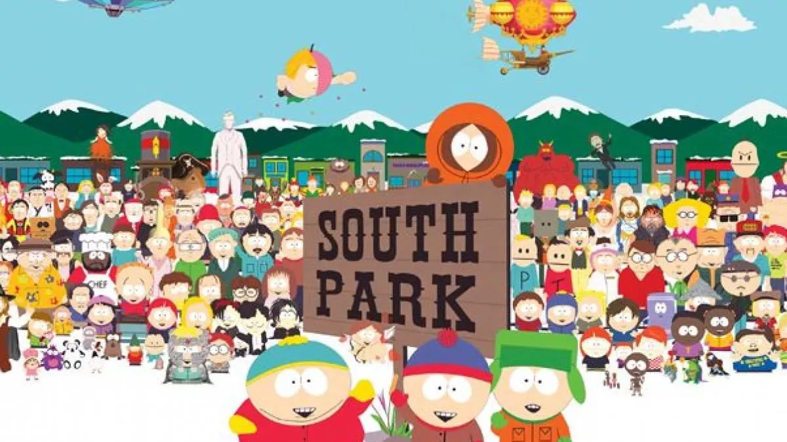

Que es South Park?
South Park és una sèrie d'animació creada per Matt Stone i Trey Parker. Va ésser distribuïda originàriament per Comedy Central des de 1997, seguint les aventures surrealistes d'una colla de quatre nens (Stan Marsh, Kyle Broflovski, Eric Cartman, i Kenny McCormick) que viuen a la petita ciutat de South Park, a Colorado. South Park satiritza molts dels aspectes de l'American Way of Live, la cultura i l'actualitat estatunidenca, aprofundint en els més forts valors i tabús, parodiant-los amb fortes dosis d'humor negre i molts renecs.